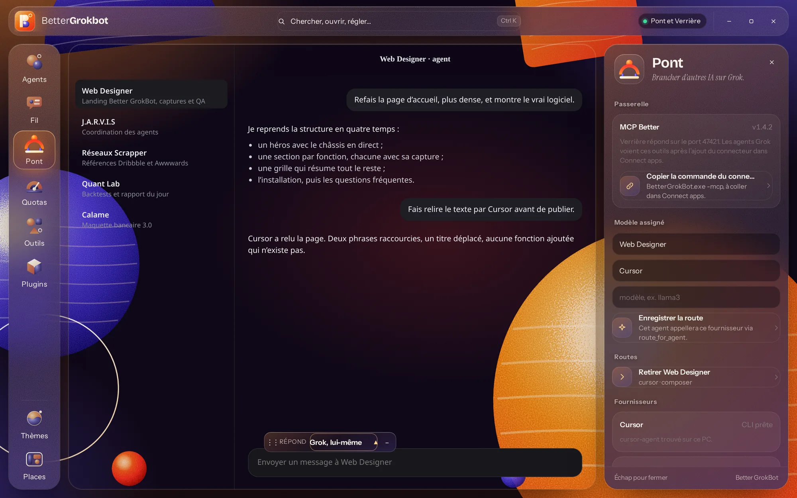
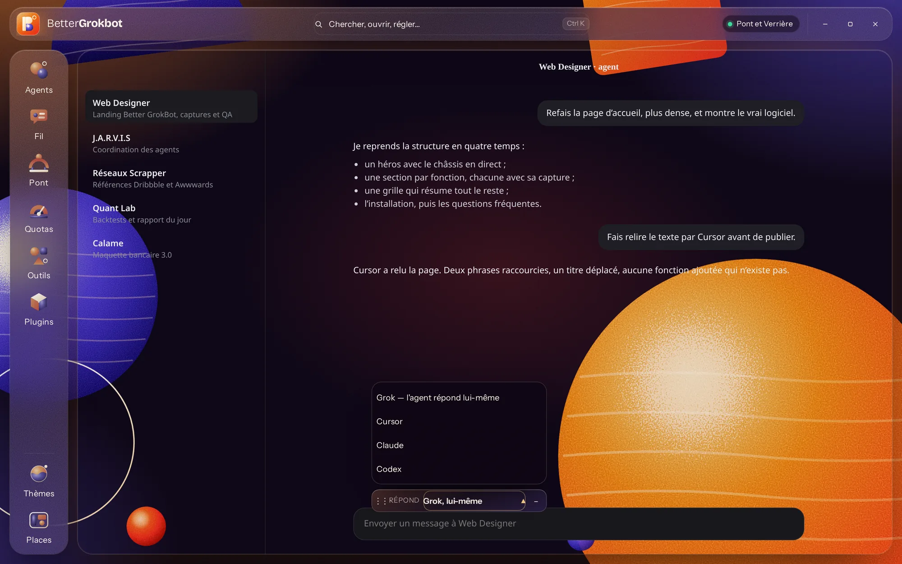
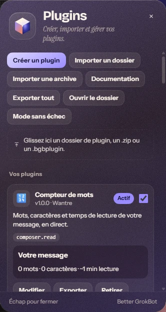
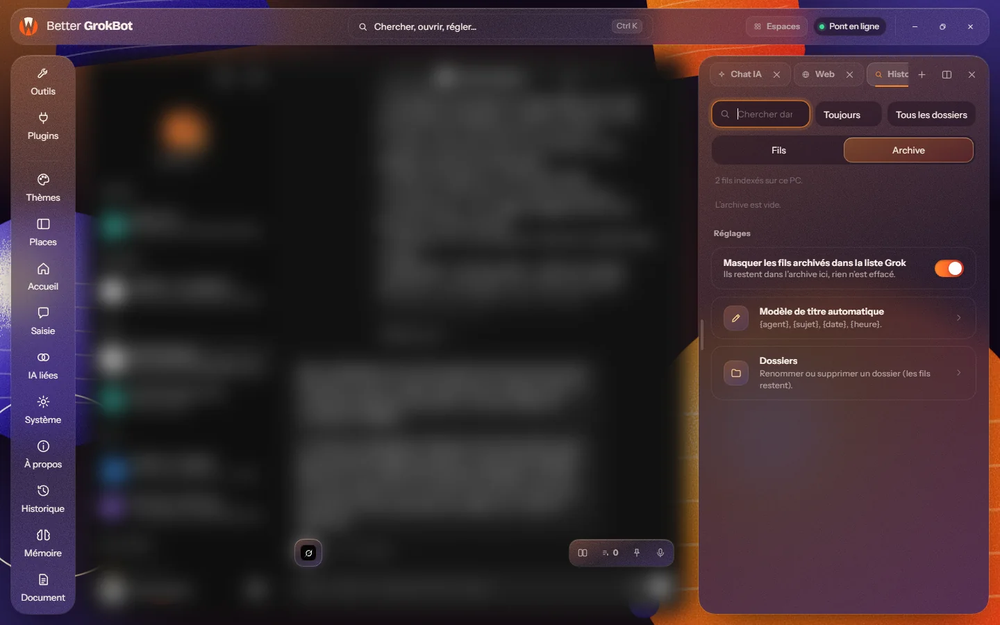
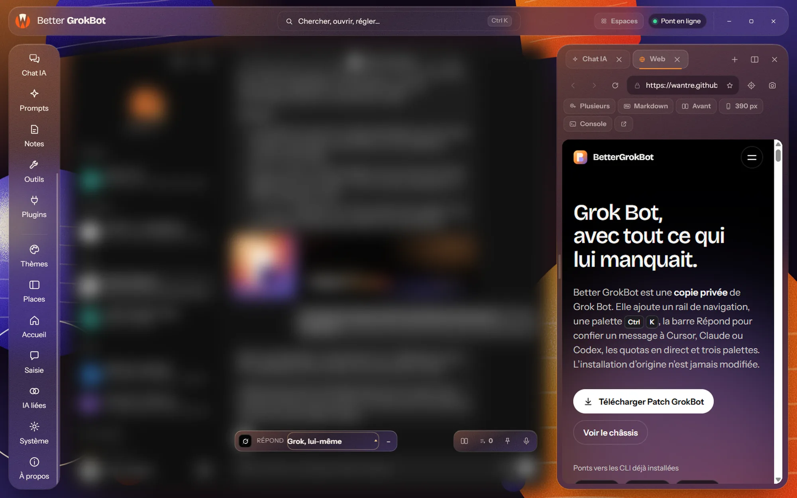
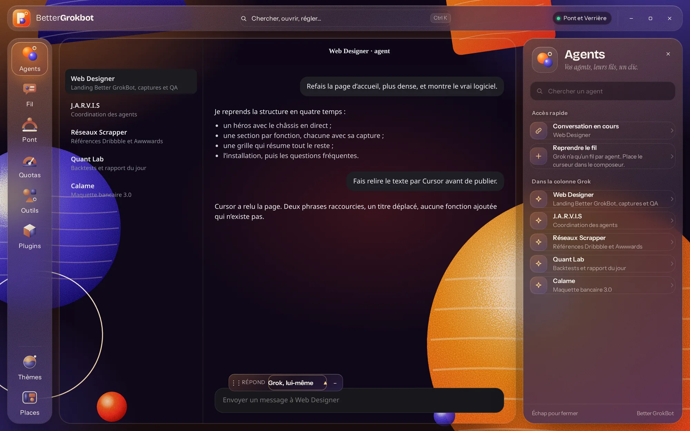
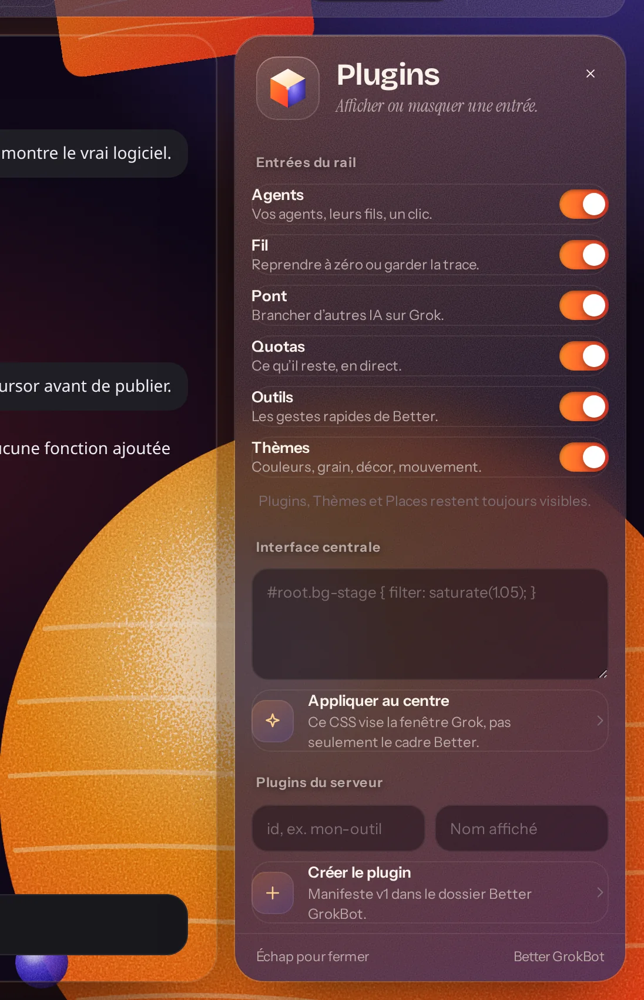

Un créateur de plugins
Partez d’un modèle, nommez votre outil : l’identifiant se remplit et se vérifie pendant la saisie. Icône, version, permissions expliquées, éditeur et aperçu en direct. Ctrl Entrée
Better GrokBot est une copie privée de Grok Bot. Elle ajoute un rail de navigation, un Chat IA et un navigateur Web à côté de la conversation, une palette Ctrl K, la barre Répond pour confier un message à Cursor, Claude ou Codex, les quotas en direct et des mises à jour qui s’installent seules. L’installation d’origine n’est jamais modifiée.







Grok Bot.exe et app.asar sont lus dans Programs\Grok Bot. Rien n’y est écrit.
La copie s’installe dans Local\GrokBot-inprocess. L’archive y est reconstruite avec le châssis.
La fenêtre qui s’ouvre est Better GrokBot. Votre Grok Bot d’origine reste là, tel quel.
Rangez vos applications en tuiles à côté de Grok, comme sous Hyprland : neuf espaces, dispositions, raccourcis, fenêtres flottantes. Un terminal et un explorateur de fichiers intégrés, des extensions Chrome dans le volet Web, et un agent IA qui clique et écrit pour vous, en vous demandant confirmation.
Accrochez une fenêtre ouverte sur votre PC : elle prend la place de Grok et reste utilisable. Le Chat IA peut la voir, seulement si vous l’activez (Cursor, Claude ou Codex) : chaque message emporte alors une capture de cette fenêtre. Un bouton « Connexion du compte » relie aussi vos fournisseurs, et le rail se réordonne par glisser-déposer.
Better parle français, anglais, espagnol, allemand, italien, portugais, néerlandais et polonais, et suit la langue de Windows. Les plugins tournent chacun dans un espace isolé, avec des permissions claires, un créateur, une galerie et des paquets à glisser sur la fenêtre. Captures réelles de la 1.5.
Partez d’un modèle, nommez votre outil : l’identifiant se remplit et se vérifie pendant la saisie. Icône, version, permissions expliquées, éditeur et aperçu en direct. Ctrl Entrée

Chaque plugin tourne dans son propre Worker et ne fait que ce qu’il déclare. Jamais vos clés, jetons ou fichiers.

Compteur de mots, réponses types, minuteur focus, météo sans clé, conversation en Markdown. Un clic pour installer.

La langue de Windows au premier lancement, à changer dans Système. Dates et nombres suivent.

Glissez un dossier, un .zip ou un .bgbplugin : manifeste vérifié, permissions montrées, confirmation, « Redémarrer maintenant ».
Un historique où tout se cherche, une mémoire chiffrée qui reste sur le PC, des projets reliés à GitHub, un volet Document et la lecture à voix haute. Captures réelles de la 1.4 ; la conversation Grok est floutée.

Prénom, métier, préférences, souvenirs et profils de consignes dans un coffre chiffré avec votre compte Windows. Better prépare un court contexte que vous joignez au message, seulement quand vous le voulez.

Recherche dans tous les fils indexés, titres automatiques, dossiers, étiquettes et archive. Ctrl Maj F

Un volet d’écriture avec aperçu, recherche et retouche par Grok. Enregistrement en .md, .txt ou PDF. Ctrl Maj O

Sélectionnez un passage : le citer, le retenir, le lire à voix haute, l’envoyer au Document ou continuer d’ici avec un autre agent.

Le rond « Répond » et la barre de droite restent à 8 px au-dessus du champ, même avec un long texte, une image jointe ou une fenêtre étroite.
Les versions 1.1 à 1.3 ajoutent un volet de chat pour les IA reliées, un navigateur Web avec sélection d’éléments, un rail qui se range et défile, et des mises à jour complètes. Captures réelles de la 1.3 ; la conversation Grok est floutée.
Parlez à Cursor, Codex, Claude Code ou une IA locale dans un volet à côté de Grok. Choix du modèle avec logos, conversations gardées sur le PC, Markdown et code à copier, comparaison côte à côte. Rien ne part vers Grok sans votre clic. Ctrl Maj A

Une page ouverte à côté du fil. Le sélecteur envoie un élément, son texte et son image dans le champ de saisie, ou la page entière en Markdown. Ctrl Maj E

La carte reste fixe au-dessus du champ de saisie, avec du grain. La liste montre les logos, sépare les IA prêtes de celles à relier, et se filtre au clavier.

Le nom reste sous chaque icône en mode Simple, jamais en Compact. Épingler, monter, masquer ; le rail défile avec une barre fine qui ne prend pas de place.

Téléchargement, empreinte sha256, fermeture, patch et relance, sous un voile de transition. En option, la mise à jour attend un moment calme et prévient 60 secondes avant. La version précédente reste gardée.
La page À propos réunit la version, les liens et les bibliothèques tierces avec leurs licences. Better GrokBot est un projet indépendant.

Même Grok, même fil, mêmes agents. Le châssis s’installe autour : une barre de titre propre, un rail illustré à gauche et des panneaux qui glissent depuis la droite.
Le rail reste visible pendant que vous écrivez. Chaque entrée ouvre son panneau sans quitter le fil, et Échap le referme.
Changer de palette
La palette réunit les huit catégories, les trois palettes de couleurs et les gestes du fil. Tapez deux lettres, Entrée ouvre la bonne ligne.

La barre Répond se pose juste au-dessus du champ de saisie. Choisissez Cursor, Claude ou Codex : votre agent Grok garde la parole et confie le travail au modèle choisi.
ask_external_ai du connecteur Better GrokBot.Le panneau Pont montre l’état du serveur local, les fournisseurs trouvés sur ce PC et le modèle assigné à chaque agent.
route_for_agent.
Le pourcentage Grok est lu dans les données que le compte envoie déjà, sans ouvrir la facturation. La date de réinitialisation suit.

Grok reste l’agent qui vous parle. Les autres IA viennent l’aider, seulement quand vous le décidez.
Choisissez une palette ici : la capture change, et cette page aussi. Dans l’application, le grain, le décor et le mouvement se règlent à part.
#better-grokbot-root.

Disposition, plugins, fil, gestes rapides, connecteur. Chaque carte montre l’écran réel.

Compact : rail de 92 px et panneau de 332 px. Confort : 108 px et 388 px. Glissez une entrée du rail pour changer son ordre.

Affichez ou masquez une entrée du rail. Un plugin peut aussi viser le CSS du centre, là où se tient la conversation.

Reprendre le fil place le curseur dans le composeur. Partager ouvre le partage de Grok, sinon copie le nom de l’agent.

Six gestes rapides : fournisseurs, routage, bac à sable, Verrière, quota et colonne des agents.
Pour que vos agents Grok voient les outils de Better, ajoutez cette commande dans Connect apps.
BetterGrokBot.exe -mcpask_external_aiconfie une demande au modèle routésandbox_listliste le bac à sable


Logo, recherche Ctrl K, pastille d’état du pont et boutons de fenêtre. La barre native de Windows disparaît.
Formes, logo et signature à l’ouverture. Les animations se coupent dans Thèmes, et le réglage de réduction des animations du système est respecté.
Programs\Grok BotUn seul fichier : Patch GrokBot récupère la dernière version, vérifie son empreinte, ferme Grok Bot, garde la version actuelle pour un retour arrière, applique le patch et relance. Le bouton « Mettre à jour » de l’app passe par lui. Désinstaller retire la copie, jamais Grok Bot.

Patch-GrokBot.exe, toujours la dernière version. Windows peut afficher SmartScreen car le fichier n’est pas signé : « Informations complémentaires », puis « Exécuter quand même ».Ce que fait la copie, et ce qu’elle ne fait pas.
Non. Patch GrokBot lit Programs\Grok Bot sans y écrire. Tout ce qui change vit dans la copie, dans Local\GrokBot-inprocess.
Pas pour les ponts en CLI : si Cursor, Claude, Codex, Gemini, Copilot ou OpenCode sont installés et connectés sur ce PC, Better s’en sert tels quels. Pour un fournisseur à clé, la clé collée reste chiffrée.
Elle n’est pas proposée. Le panneau Pont l’affiche comme absente, avec un bouton pour la lier dès qu’elle est installée.
Il donne à vos agents Grok les outils de Better, dont ask_external_ai. Sans lui, la barre Répond ne peut pas confier de travail à un autre modèle. La commande se copie depuis le panneau Pont.
Le pourcentage Grok est lu dans les données que la session reçoit déjà. Pour les ponts liés, la jauge apparaît quand la CLI publie un chiffre, sinon la carte l’indique.
Non : Grok ne permet pas d’effacer l’historique dans le cloud, et Better ne le prétend pas. Reprendre le fil place simplement le curseur dans le composeur.
Oui, dans Thèmes, avec Animations. Le grain et le décor géométrique se coupent séparément. Le réglage de réduction des animations de Windows est respecté.
Non. Il est sous licence propriétaire Wantre, tous droits réservés : le téléchargement et l’usage personnel sont gratuits, mais la redistribution, la modification, la revente ou la réutilisation du code et de la marque demandent l’accord écrit de Wantre.
Sur le serveur Discord Better GrokBot.
Ouvrez Patch GrokBot et cliquez sur Désinstaller. La copie est retirée. Grok Bot, lui, n’est pas touché.
Better GrokBot est sous licence propriétaire Wantre — tous droits réservés. Téléchargement et usage personnel gratuits. Redistribuer, modifier, décompiler pour en faire une œuvre dérivée, revendre ou réutiliser le code ou la marque demande l’accord écrit de Wantre. Le logiciel est fourni tel quel, sans garantie. Projet indépendant, non affilié à xAI, X ou Grok Bot ; leurs marques appartiennent à leurs détenteurs.
Une copie privée, réversible en un clic, qui laisse l’original intact.
Windows, .NET 8, WebView2 et Node.